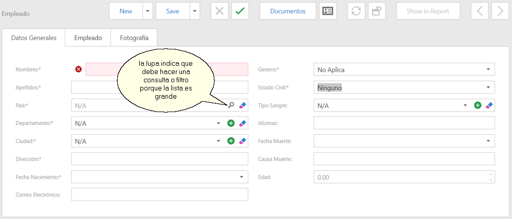
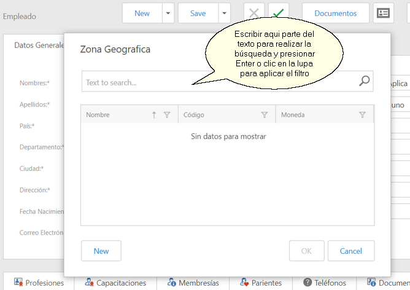
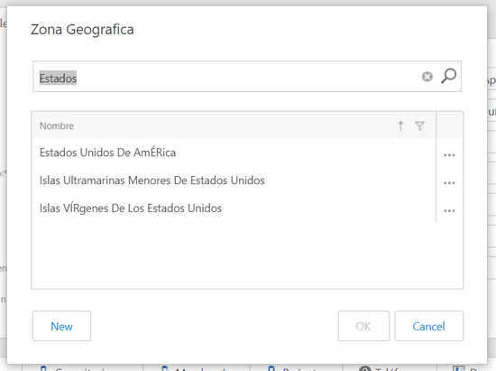
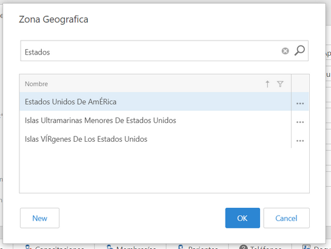
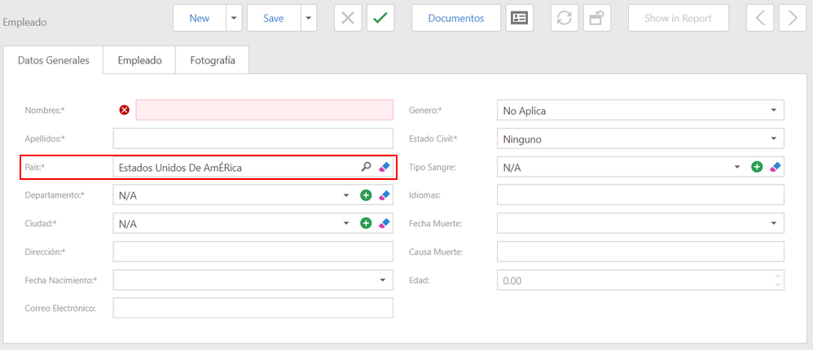

|
<< Click to Display Table of Contents >> Navigation: Funciones Generales > Buscar en Lista de Seleccion |
Cuando agrega registros en formularios o los edita, es normal que hallan lista de selección correspondientes a datos relacionados. Por ejemplo, si estamos creando un empleado, existen listas de selección para: País, Departamento, Ciudad, Genero, Estado Civil, Tipo de Sangre, Unidad, Cargo, Tipo Salario, Estado del Empleado, Nacionalidad.
Algunas de estas listas no cambian y son siempre las mismas, en el ejemplo de la creación de empleados tenemos: Genero, Estado Civil, Tipo Salario. Pero muchas de las listas se obtienen desde objetos de negocios vinculados y tienen su correspondiente mantenimiento, en nuestro ejemplo son: País, Departamento, Ciudad, Unidad, Cargo, Nacionalidad.
Cuando la lista es corta (por defecto menos de 50 registros), se muestra la lista con todos los registros y solo debe desplazarse o comenzar a escribir parte del texto para encontrar el registro que necesita. Sin embargo, en muchos casos la lista puede tener cientos o miles de registros y el usuario debe filtrarlos para realizar la búsqueda.

En la imagen anterior en la lista de selección País hay un botón con una lupa, lo cual nos indica que esa lista tiene muchos registros y por lo tanto tendremos que hacer un filtro para localizar el registro que necesitamos.
Al dar clic en el botón de la lupa se muestra el diálogo popup para realizar la búsqueda en el Business Object de la referencia, en nuestro ejemplo será Países. La parte superior del diálogo tiene una caja de texto para ingresar el criterio de la búsqueda.

El sistema mostrará todos los registros que contienen el texto digitado, como se muestra en la siguiente imagen

Seleccionar el registro que se necesita. En este momento se activa el botón que corresponde a la acción OK, para regresar al mantenimiento. Cuando el usuario tiene permiso para crear registros en el mantenimiento de la lista, se muestra activada la acción New (Nuevo). En el ejemplo anterior el usuario tiene permiso de crear Zonas Geográficas.

Al dar clic en el botón OK, el sistema relaciona el registro seleccionado y regresa al formulario de entrada de datos.

El funcionamiento de las listas de selección cuando tienen muchos registros y la manera en que deben usarse será similar a este ejemplo.